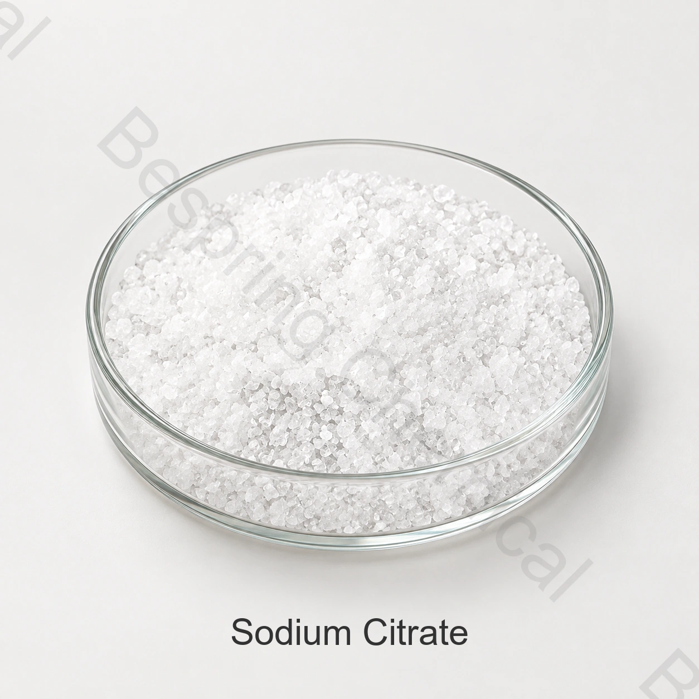

Buffering & acidity control
Helps resist rapid pH change and moderate an acid profile. Validate final pH and titratable acidity; sodium citrate does not simply behave like citric acid.
Food grade citrate salt · E331(iii) / INS 331(iii)
Trisodium citrate dihydrate is a water-soluble citrate salt used in suitable food systems for buffering, acidity regulation, sequestration and emulsion support. This page separates the commercial dihydrate identity from the broader sodium citrate name so buyers can qualify the correct grade.
State the hydrate form, required standard, particle form, application, quantity and destination.

Identity before specification
“Sodium citrate” can refer broadly to sodium salts of citric acid. The supplied product on this page is described more precisely as trisodium citrate dihydrate, the fully neutralised trisodium salt with two waters of crystallisation. Codex identifies trisodium citrate as INS 331(iii); the wider E331 group also includes mono- and disodium citrate, so E331 alone is not a complete purchase identity.
Hydrate form matters because anhydrous and dihydrate materials have different formula weights, moisture profiles and equal-weight citrate contribution. They should not be treated as interchangeable without reformulation and a confirmed specification.
Formulation roles
Codex lists acidity regulation, emulsifying, emulsifying-salt, sequestrant and stabilising functions for trisodium citrate. The practical result depends on the complete formula, not the ingredient name alone.
Helps resist rapid pH change and moderate an acid profile. Validate final pH and titratable acidity; sodium citrate does not simply behave like citric acid.
Citrate can interact with calcium and other metal ions. Confirm haze, precipitation, protein response and mineral availability in the actual formulation.
In suitable processed-cheese systems, citrate can support calcium management and protein dispersion. Melt, viscosity, oil separation and flavour still require trials.
Can soften sharp acidity while adding a mild saline citrate character. Sensory impact and sodium contribution must be assessed at the intended use level.
Selection distinction
Citric acid primarily supplies acidity and lowers pH. Trisodium citrate supplies citrate and sodium ions and generally provides buffering or pH moderation. A formulation may use either or both depending on the target acid profile and buffering capacity.
Application decision points
These are evaluation pathways, not universal permissions or dosage recommendations. Confirm the food category, permitted function, use level and label declaration for the destination market.
Purpose: buffer acid systems and balance flavour. Validate: final pH, titratable acidity, carbonation, haze, colour, taste and preservative performance.
Purpose: support calcium control and protein dispersion. Validate: melt, firmness, viscosity, oil separation, cooling profile and storage stability.
Purpose: manage buffering and mineral-protein interactions. Validate: heat stability, sediment, viscosity, flavour and compatibility with stabilisers.
Purpose: provide dry buffering and acid-profile control. Validate: particle segregation, dissolution, moisture pickup, dose uniformity and final-product pH.
Source-specific technical data
The table reproduces the supplied BP98/E331 sheet and does not create a universal specification. BP98 is a dated reference; the contractual document must identify the current required standard, test methods and offered grade.
| Test item | BP98 reference | E331 reference | Qualification note |
|---|---|---|---|
| Appearance | Colourless or white crystals / crystalline powder | Confirm particle form | |
| Content | 99.0–101.0% | 99.0–101.0% | Confirm assay basis and method |
| Acidity / alkalinity | Passes test | Request method | |
| Sulfide | ≤ 0.015% | ≤ 0.015% | Supplied spelling normalised |
| Heavy metals, as Pb | ≤ 0.001% | ≤ 0.0005% | Not a separate lead test |
| Oxalate | ≤ 0.03% | ≤ 0.01% | Different limits by column |
| Readily carbonisable substances | Complies | Request method and reference | |
| Chloride | ≤ 0.005% | Supplied common limit | |
| Loss on drying | 11.0–13.0% | Confirm temperature and time | |
| pH, 5% w/v solution | Not stated | 7.5–9.0 | Control solution conditions |
| Arsenic | Not stated | ≤ 1 mg/kg | Separate E331 item |
| Lead | Not stated | ≤ 1 mg/kg | Separate E331 item |
| Mercury | Not stated | ≤ 1 mg/kg | Separate E331 item |
| Clarity | Not stated | Complies | Request test conditions |
The supplied sheet pairs the dihydrate formula with CAS 68-04-2. The JECFA trisodium citrate monograph also uses 68-04-2 while describing anhydrous and hydrated material generally; NIH PubChem identifies sodium citrate dihydrate as CAS 6132-04-3. Require the signed specification, SDS and COA for the offered material to use one internally consistent identity rather than resolving the discrepancy by assumption.
JECFA describes trisodium citrate as colourless, odourless crystals or white crystalline powder; hydrated forms include the dihydrate and pentahemihydrate. It lists a minimum assay of 99.0% on the dried basis and functional uses as buffer, sequestrant and emulsion stabiliser. These public identity criteria provide context, but they do not prove that the offered batch meets JECFA or replace the supplied BP98/E331 table.
Review the FAO/WHO JECFA trisodium citrate monograph, Codex GSFA entry for INS 331(iii) and NIH PubChem sodium citrate dihydrate record. The GSFA lists functional classes and food-category provisions; permission must be checked for the destination market and final food.
Technical content reviewed against the cited public references on 22 August 2026. Bespring commercial specifications and destination-market requirements must be reconfirmed before purchase.
Supplier qualification
Dihydrate or anhydrous, CAS presentation, formula, additive identity and particle form must agree across specification, SDS and COA.
Confirm the standard edition, assay basis, loss-on-drying method, solution concentration for pH and contaminant methods.
Compare dissolution, flavour, sodium contribution, pH response, mineral interactions and finished-product stability.
Reconfirm 25 kg reference packing, 500 kg reference MOQ, quantity, pallet requirements, destination and delivery timing.
Current specification/TDS, SDS, representative COA, shipment COA and only those food-quality certificates that apply to the supplying site and product.
Storage & handling
Buyer questions
“Sodium citrate” is often used commercially for trisodium citrate, but it can also describe a wider family of sodium citrate salts. Specify trisodium citrate, INS 331(iii), and the required hydrate form in purchasing documents.
Dihydrate and anhydrous grades have different formula weights and moisture profiles. Equal weights do not provide identical amounts of anhydrous trisodium citrate, so substitution requires calculation and finished-product validation.
Codex lists acidity regulator, emulsifier, emulsifying salt, sequestrant and stabiliser functions. Actual use depends on the food category, destination-market rules and formulation performance.
Citric acid primarily acidifies and lowers pH. Trisodium citrate is the fully neutralised sodium salt and is commonly selected for buffering, citrate-ion supply and mineral-ion management.
The supplied commercial information states 25 kg per bag and a 500 kg reference MOQ. Reconfirm both for the destination, quantity and offered grade.
Provide dihydrate or anhydrous form, required standard, particle form, application, specification, quantity, packing, destination, documents and target delivery date.
Last technically reviewed on 22 August 2026 by the Bespring Chemical technical and export team.
Related formulation choices
Related application guidance: Processed Cheese Emulsifying Salts & Dairy Stabilizers.
Specification-led sourcing
Share the identity, technical and logistics details needed to match the offer and documents to your application.